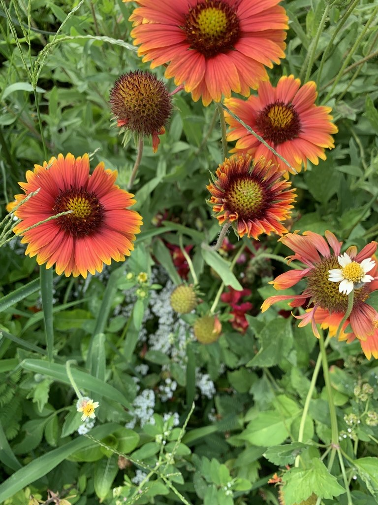

- Named Firewheel for obvious reasons, this wildflower manages to look like it's perpetually on fire.
- It thrives in sandy, dry, nutrient-poor soils that challenge most plants.
- Its native status is genuinely debated: celebrated for generations as a Florida native, a 2020 genetic study concluded it likely originated in the Great Plains and spread to Florida before European settlement.
- Ecologically it functions exactly as a native would — bees, butterflies, and birds treat it as their own.
Native primarily to the Great Plains and southwestern United States — South Dakota, Nebraska, Kansas, Oklahoma, Texas, Louisiana, and Arizona — extending south into northern Mexico. Long celebrated as a Florida native wildflower, planted on roadsides and in coastal gardens as an ecological choice.
A 2020 genetic study concluded it is likely not native to the eastern US including Florida, having spread from the Great Plains before European settlement. Whether that makes it native or naturalized is genuinely debated among Florida botanists — ecologically, it functions as if it belongs here.
- The Firewheel has a fascinating identity crisis — for generations it was celebrated as a Florida native, planted on roadsides and in coastal gardens as an ecological choice. Then in 2020, genetic research concluded it likely originated in the Great Plains and spread to Florida before European settlement. Whether that makes it native or naturalized is genuinely contested among Florida botanists.
- Its tough constitution is extraordinary — it thrives in pure beach sand with salt spray, drought, and nutrient-poor soil that would kill most garden plants within days. One of very few wildflowers that can be planted directly on a coastal dune with no soil amendment.
- The flowers have a clever design: the reddish-brown central disk florets are fertile and do the reproductive work, while the showy yellow-tipped ray petals are sterile — their only job is advertising to pollinators. The rays are the billboard; the disk is the factory.
- It reseeds so freely in Florida landscapes that it essentially maintains itself without human intervention, naturalizing into roadsides, open fields, and coastal edges across the state.
A reliable pollinator plant across its entire blooming season — bees work the central disk florets for pollen and nectar, and butterflies including sulphurs, skippers, and painted ladies visit consistently. The dry seed heads are eaten by birds including goldfinches and sparrows. Its tolerance for dry, poor soil means it can establish wildlife habitat in places most plants cannot.
In mass plantings it provides excellent cover for ground-feeding birds and small insects.
Grows quickly from seed, often blooming in the first season. Reseeds freely in well-drained soils.
Typically red petals with yellow tips and a brownish-red central disk, though some forms lean more yellow or orange. Season: late spring to fall, especially with deadheading or light shearing.
Small dry achenes with papery scales — readily eaten by birds and dispersed by wind.
Alternate, lance-shaped, slightly hairy and aromatic. Stems hairy and branching.
The fiery red-and-yellow ray flowers with the dark central disk are unmistakable. Look for it in open, sunny, sandy areas. Watch for bees working the central disk florets and butterflies on the rays.
This isn't a food plant and has no known edible uses, but it's harmless — no known toxicity to people or pets.


- © averierob (CC-BY-NC), via iNaturalist
- © jsea (CC-BY-NC), via iNaturalist
- © Franky McArthur (CC-BY-NC), via iNaturalist